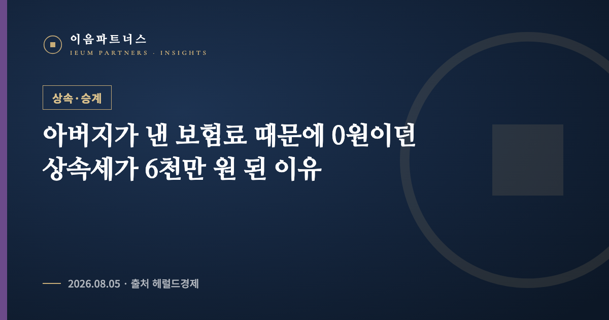

아버지가 낸 보험료 때문에 0원이던 상속세가 6천만 원 된 이유

보험 계약자도 자녀, 보험금을 받는 사람도 자녀라면 부모님이 돌아가셔도 그 보험금에는 상속세가 없다고 생각하기 쉽습니다. 그런데 보험료 일부를 부모님이 냈다면 이야기가 달라집니다. 이 글에서는 보험금에 세금이 붙는 기준과 실제 계산 사례, 미리 챙길 점을 정리합니다.
기사에 소개된 세무사는 계약자와 수익자가 본인이면 자기 재산이라고 생각하기 쉽지만 “세법은 ‘누가 보험료를 부담했는지’를 더 중요하게 봅니다”라고 설명했습니다(헤럴드경제). 가족 명의 보험이 여러 건이라면 지금 납입 구조를 확인해 두는 것만으로도 나중의 세금 부담을 줄일 수 있습니다. 확인이 어렵다면 카카오톡 채널 이음파트너스에서 편하게 물어보셔도 됩니다.
0원이던 상속세가 6천만 원이 된 사례
기사에 소개된 40대 상속인은 아버지에게서 시가 10억 원 아파트를 물려받았습니다. 상속공제 범위(일반적으로 10억 원) 안이어서 상속세는 없을 것으로 봤습니다. 이후 아버지를 피보험자로 한 생명보험금 4억 원도 받았는데, 계약자와 수익자는 모두 본인이었습니다. 하지만 보험료 일부를 아버지가 냈다는 이유로 상속세가 나왔습니다.
| 구분 | 내용 |
|---|---|
| 총 보험료 | 2,000만 원 |
| 아버지가 낸 보험료 | 1,500만 원(75%) |
| 상속재산에 들어간 보험금 | 4억 원 × 75% = 3억 원 |
| 총 상속재산 | 10억 원 + 3억 원 = 13억 원 |
| 예상 상속세 | 3억 원에 20% 세율을 가정하면 약 6,000만 원 |
신고를 하지 않았다면 무신고가산세(내야 할 세금의 20%)와 납부지연가산세가 더해져 부담이 7,000만 원을 넘을 수도 있다고 기사는 설명합니다. 명의만 믿고 신고를 빠뜨리면 세금보다 가산세 부담이 더 커질 수 있습니다.
세금은 무엇으로 갈리나
보험 세금은 계약자, 실제로 보험료를 낸 사람, 보험금을 받는 사람(수익자)의 관계로 정해집니다. 보험료를 낸 사람과 보험금을 받는 사람이 같으면 원칙적으로 상속세·증여세 문제가 없고, 둘이 다르면 상속세나 증여세가 붙을 수 있습니다.
계약자가 아닌 사람이 보험료를 내면 세법은 그만큼을 계약자에게 증여한 것으로 추정합니다. 증여추정(일단 증여로 보고, 아니라는 사실은 납세자가 증명해야 하는 제도)이기 때문에 증빙이 없으면 설명하기 어렵습니다. 경우별로 정리하면 다음과 같습니다.
- 아버지가 보험료를 내고 아버지 사망으로 자녀가 받으면: 아버지가 낸 비율만큼 상속재산
- 살아 계신 어머니가 보험료를 냈다면: 아버지 사망 보험금에 상속세는 없지만, 어머니가 낸 비율만큼 증여세 대상
- 자녀가 자기 돈으로 모두 냈다면: 계약자가 부모라도 증여세·상속세 대상 아님
증여 시점도 헷갈리기 쉽습니다. 세법은 보험료를 낸 날이 아니라 사망이나 만기 같은 보험사고가 난 날을 증여 시점으로 보고, 그날 받은 보험금으로 금액을 계산합니다. 중도인출금이나 해약환급금도 같은 원칙으로 판단합니다.
대표님이 지금 확인할 것
- 가족 명의 보험마다 계약자·실제 납입자·수익자가 누구인지 한 장에 정리하기
- 계약자와 실제 납입자가 다른 계약이 있는지
- 가족이 보험료를 대신 냈다면 입출금 내역 등 증빙 보관
- 증여세 신고가 필요한 경우 기한 안에 신고하기
참고한 자료
- “아버지가 낸 보험료 때문에” 0원이던 상속세가 6000만원 됐다 — 헤럴드경제 (2026.08.05)
상속은 계약서의 이름보다 실제 돈의 흐름으로 판단됩니다. 가족 자산 구조를 점검해 보고 싶으시다면 카카오톡 채널 이음파트너스로 문의해 주세요.
※ 이 글은 일반적인 정보 제공을 위한 것으로, 개별 사안은 세무사·노무사 등 전문가와 함께 확인하시기 바랍니다.